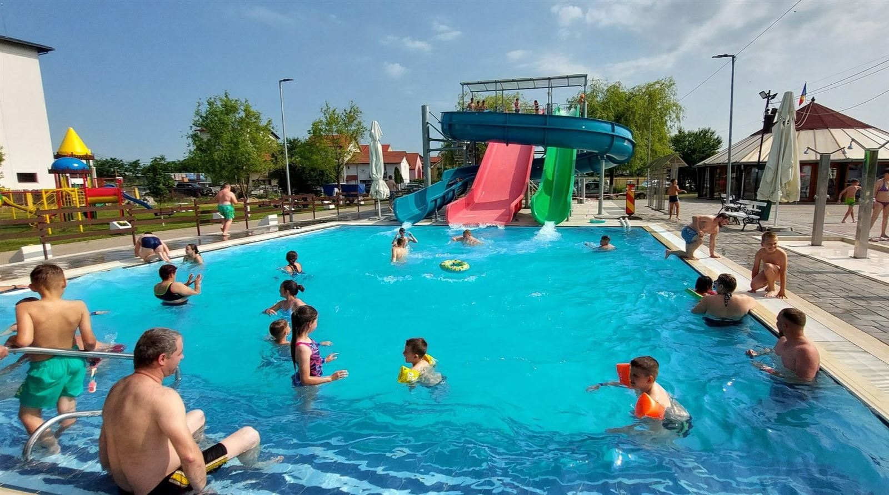
Szatmár megye · Erdély · Románia
Gyógyító termálvíz Erdély szívében
Ștrandul Termal Tășnad · Tăşnadi Termálstrand
Szatmár megye legnagyobb termálstrandja — medencék, vízi csúszdák, akár 40 °C-os ásványi gyógyvíz, tágas zöld terület és kemping.
A gyógyvíz
Ásványokban gazdag, természetes termálvíz
A tăşnadi termálvíz a mélyből tör fel, hőmérséklete elérheti a 40 °C-ot. Magas ásványianyag-tartalma évtizedek óta vonzza a gyógyulni és pihenni vágyókat.
Reumatikus panaszok
A meleg, ásványi víz jótékonyan hat az ízületi és reumatikus fájdalmakra.
Bőrgyógyászat
A víz összetétele segíthet a különféle bőrproblémák enyhítésében.
Nőgyógyászat
Hagyományosan ajánlott bizonyos nőgyógyászati panaszok kiegészítő kezelésére.
Neurológia
A pihentető fürdőzés jótékony hatással lehet a neurológiai eredetű panaszokra.
Élmények
Medencék, csúszdák és sok szabad tér
A strand öt medencéből áll — egy hidegvizes és négy termálvizes —, vízi csúszdákkal, gyerekmedencével, játszótérrel és tágas füves napozórésszel.
Öt medence
Négy termálvizes és egy hidegvizes medence minden korosztálynak.
Meleg termálvíz
A termálmedencék vize akár 40 °C-ig melegszik.
Vízi csúszdák
Színes csúszdák nagyoknak és kicsiknek, külön élménymedencével.
Gyereksarok
Gyerekmedence és játszótér a legkisebbeknek.
Kemping
A strand mellett kemping is működik a többnapos pihenéshez.
Okoskarkötő
Okoskarkötővel egész nap korlátlanul ki-be járhatsz a strandra.
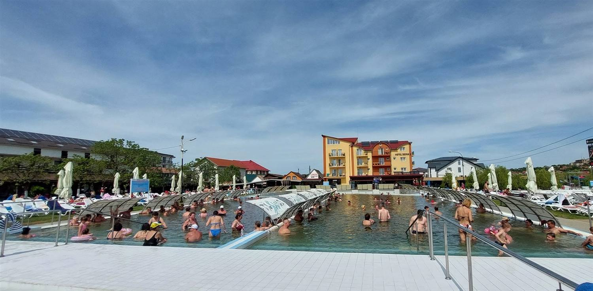
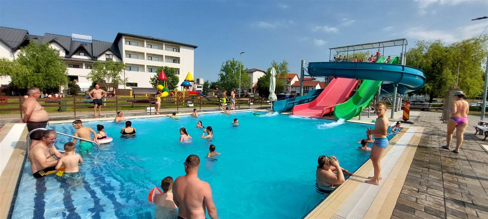
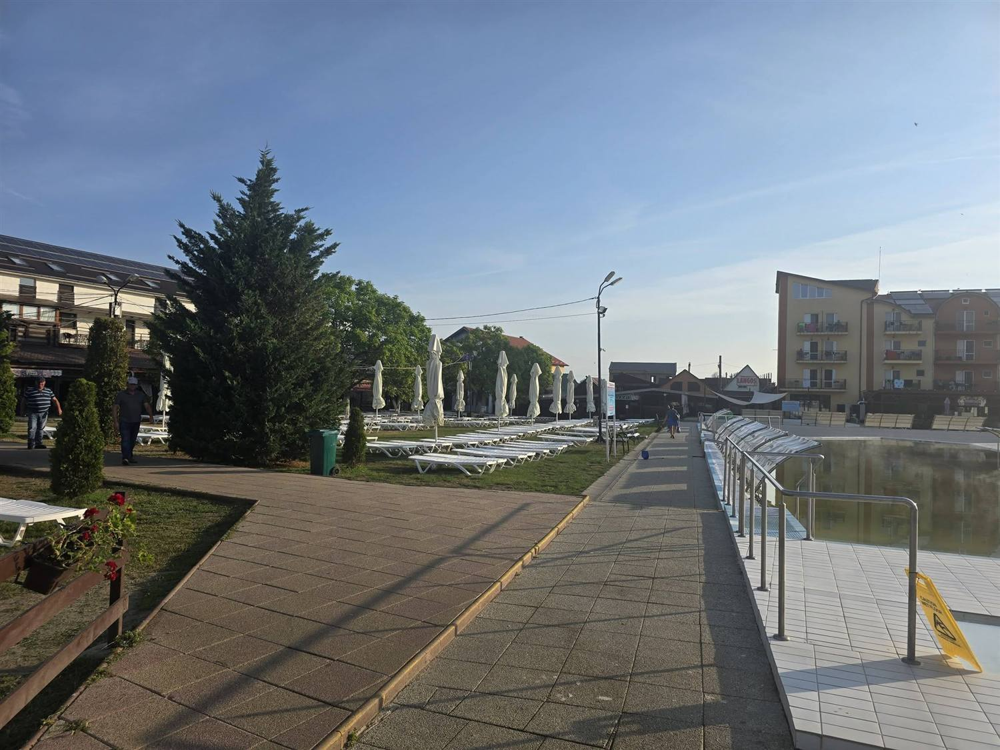
Galéria
Pillanatképek a strandról
Kattints egy képre a nagyításhoz. Nyáron nyüzsgés és élmény, kora reggel csendes, tükörsima medencék.
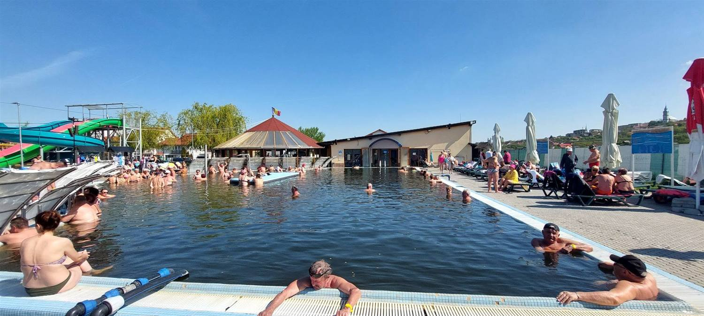
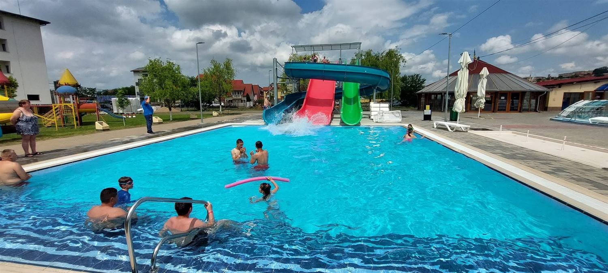
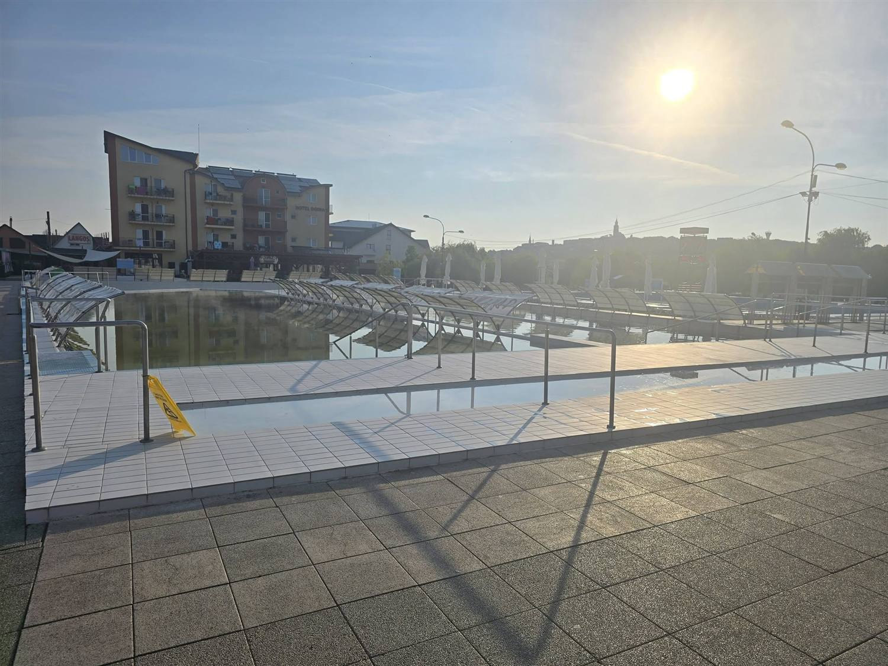
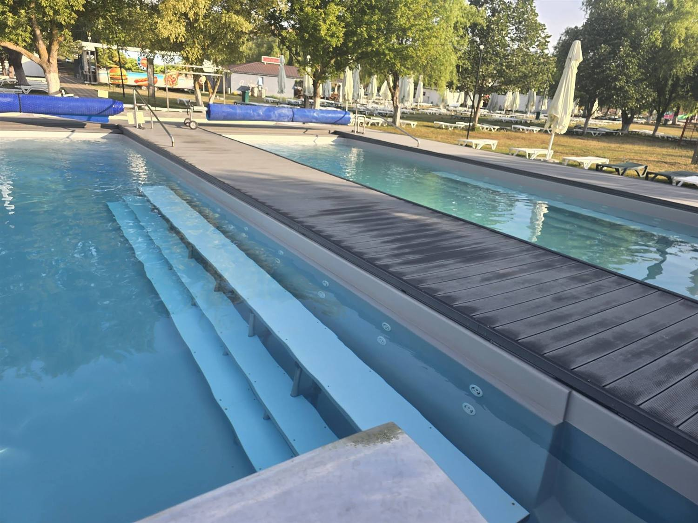
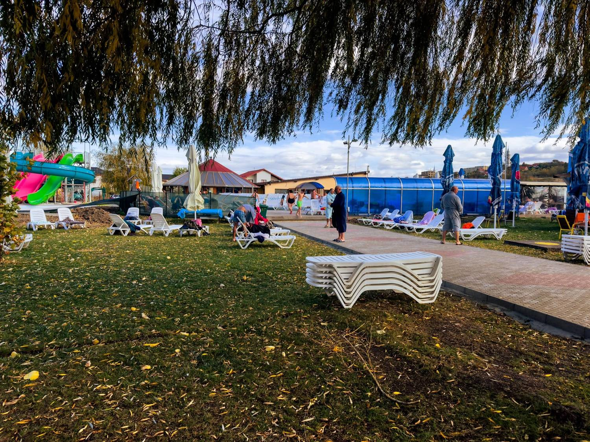
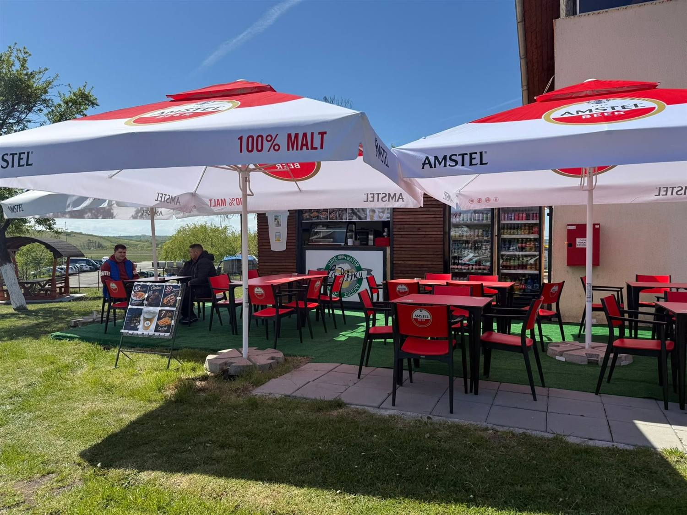
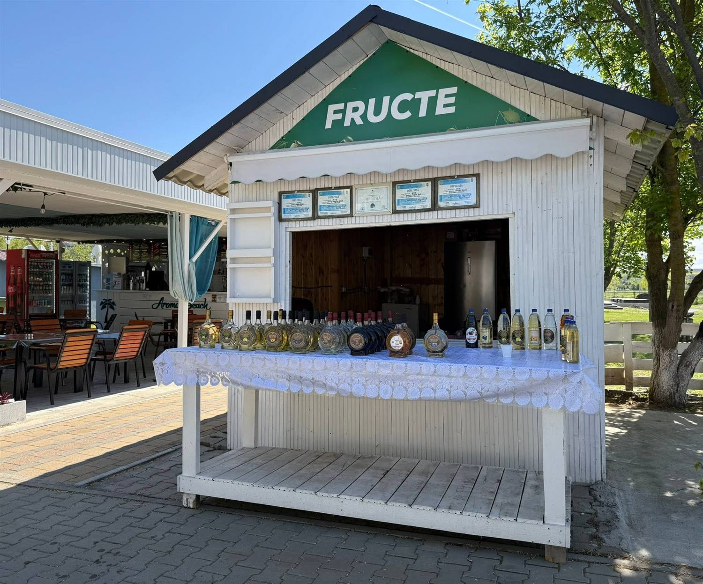
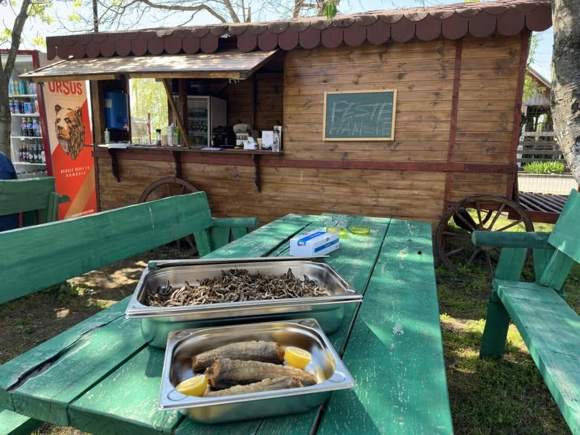
Események
Nyári hangulat és rendezvények
A strandon a szezonban rendszeresen vannak programok — a legnépszerűbb a nagy nyári habparty, ahol a medence habtengerré változik.
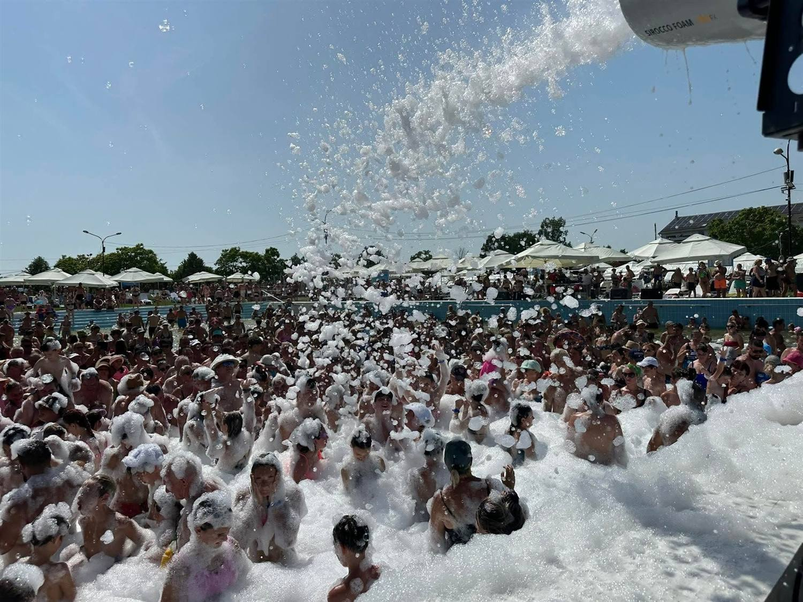
Habparty
A nyár slágere: zene, hűsítő hab és több száz vendég a medencében. Igazi fesztiválhangulat a legmelegebb napokra.
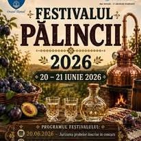
Pálinka Fesztivál (Festivalul Pălincii)
A régió hagyományos, visszatérő ünnepe a helyi pálinkáról és ízekről — kóstolók, verseny és zene a strand közelében. Az aktuális időpontokért kövesd a hivatalos Facebook-oldalt.
Vendéglátás
Falatozók, terasz és helyi ízek
Teraszok és büfék
A strand területén árnyékos teraszok, hűsítők, lángos, sörözők és gyorsételek várnak — nem kell elhagynod a strandot egy jó falatért.
Helyi termékek, pálinka
Kóstold meg és vidd haza a környék díjnyertes pálinkáit és házias termékeit a strand standjairól.
Árak
Belépőjegyek
A napijegy egész napra szól. Kérjük, a pontos, aktuális árakért érdeklődj telefonon vagy a hivatalos Facebook-oldalon.
| Kategória | Ár / nap |
|---|---|
| Felnőtt | 40 lei |
| Gyerek · diák · egyetemista | 20 lei |
| 6 év alatti gyerekek | ingyenes |
| Felnőtt — 16:00 után (H–P) | 25 lei |
| Gyerek/diák — 16:00 után (H–P) | 15 lei |
Okoskarkötő
A jegy árához 20 lei letét adódik a karkötőért, amit távozáskor, még aznap visszakapsz. A karkötővel egész nap korlátlanul ki-be járhatsz.
Bérletek
Bérletek a tăşnadi Turisztikai Információs Központban válthatók.
* A feltüntetett árak tájékoztató jellegűek, változhatnak. Aktuális árakért lásd a hivatalos oldalt.
Nyitvatartás és elérhetőség
Tervezd meg a látogatást
Nyitvatartás
A nyári szezon jellemzően május 1-jén nyílik. A szezonon kívüli nyitvatartásról telefonon érdeklődj.
Kapcsolat
- CímStrada Ștefan cel Mare, Tășnad 445300, Szatmár megye, Románia
- Telefon0261 827 820
- FacebookStațiunea Turistică Tășnad
- TérképMegnyitás Google Térképen